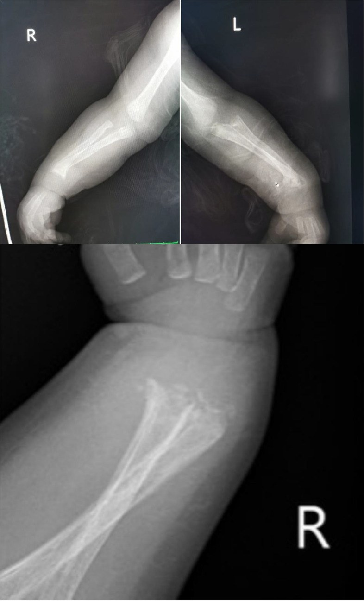
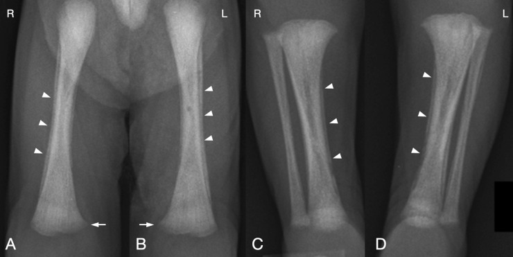
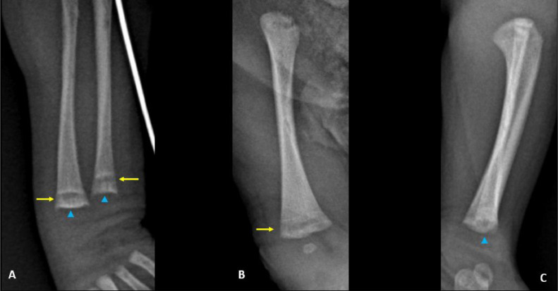

6127 — Giang mai bẩm sinh: viêm xương sụn, viêm màng xương & liệt giả Parrot / Congenital syphilis: osteochondritis, periostitis & pseudoparalysis
Tags: pattern:day-sang-dau-xuong pattern:vien-mang-xuong pattern:gay-xuong pattern:huy-xuong vung:xuong-dai protocol:X-quang-xuong-dai score:Wimberger incidentaloma:khong
Mức chắc chắn (certainty): tổng hợp y văn (literature synthesis) — ghép tổng quan minh họa về giang mai bẩm sinh (Children (Basel) 2023, PMC10453258), ca trẻ 2 tháng gãy nhiều xương (BMC Pediatr 2022, PMC9768959), ca sơ sinh viêm màng xương đối xứng (Radiol Case Rep 2021, PMC8495030) và ca sinh non 33 tuần không triệu chứng (Radiol Case Rep 2025, PMC11625107). Không có ca do nhóm tự chụp.
Câu hỏi thực hành: bé trai 2 tháng tuổi nhập viện vì gãy thân xương quay và xương trụ hai bên, kèm thở rít; bác sĩ chỉnh hình nghi xơ xương bất toàn (osteogenesis imperfecta). Phim không thấy xương mỏng, không giảm đậm độ toàn thân, nhưng có dải sáng ngang đầu xương và phản ứng màng xương đối xứng. Câu hỏi: gãy do bị bạo hành, do bệnh xương di truyền, hay do nhiễm trùng bẩm sinh?
1. Tổng quan bệnh học – cơ chế hình ảnh
- Bệnh học: Treponema pallidum lây qua nhau thai ở bất kỳ tam cá nguyệt nào; nguy cơ lây cao nhất khi mẹ ở giai đoạn sớm — 40–70% ở giang mai sớm, giảm còn ~10% ở giai đoạn muộn. Tổn thương xương là viêm xương sụn (osteochondritis) ở vùng sụn tiếp hợp, viêm màng xương (periostitis) và viêm tủy xương (osteitis) do phản ứng viêm quanh mạch của xoắn khuẩn.
- TẠI SAO lại là “dải sáng đầu xương” (metaphyseal radiolucent band):
- Vùng sụn tiếp hợp giàu mạch máu, là nơi xoắn khuẩn dễ khu trú → viêm và tiêu xương ở bè xương sơ khai ngay dưới sụn.
- Trên X-quang, vùng tiêu xương tạo dải sáng ngang chạy song song sụn tiếp hợp, thường có viền xơ hóa (sclerotic line) ở trên và dưới — dấu hiệu của metaphysitis.
- Khi các dải sáng–đặc xen kẽ nhau, đầu xương trông như thân cần tây (celery stalk); bờ đầu xương bị bào mòn tạo hình răng cưa (serrated).
- Màng xương dày lên do viêm → phản ứng màng xương đối xứng dọc thân xương, có thể thấy “vỏ hành”; về sau màng xương dày có thể dày dính vào vỏ xương.
- Wimberger sign: khuyết/tiêu xương bờ trong đầu xương chày gần — dấu hiệu kinh điển của viêm xương do giang mai bẩm sinh.
- Đau xương → trẻ không cử động chi = “liệt giả Parrot” (pseudoparalysis of Parrot), dễ nhầm với liệt đám rối cánh tay hoặc viêm khớp nhiễm khuẩn.
- Ngưỡng định lượng:
- Tổn thương xương gặp ở 60–80% trẻ giang mai bẩm sinh và có thể là biểu hiện DUY NHẤT (BMC Pediatr 2022, PMC9768959).
- Trong giang mai bẩm sinh sớm: viêm xương sụn 24%, phản ứng màng xương 34%, viêm xương 0,7% (Radiol Case Rep 2021, PMC8495030).
- Tới 70% trẻ sơ sinh nhiễm có thể KHÔNG có triệu chứng lúc sinh. Thai chết lưu/hydrops có thể tới 40% ở thai kỳ không điều trị.
- Dịch tễ Hoa Kỳ 2021: 2.677 ca giang mai bẩm sinh, 77,9/100.000 trẻ sinh sống; +30,5% so với 2020 và +219,3% so với 2017 (Children (Basel) 2023, PMC10453258).
- Vì sao tổn thương đối xứng: xoắn khuẩn lan qua đường máu → tác động lên các vùng sụn tiếp hợp đang phát triển mạnh nhất ở cùng thời điểm (đầu dưới xương quay/trụ, đầu dưới xương đùi, đầu trên xương chày) → tổn thương hai bên, đối xứng. Đây là chốt phân biệt với gãy do bạo hành (thường không đối xứng, không có dải sáng đầu xương).
2. Mẫu hình + chẩn đoán phân biệt theo vị trí (Gamut)
- Dải sáng ngang đầu xương (metaphyseal bands): giang mai bẩm sinh · nhiễm trùng bẩm sinh khác (CMV, rubella) · bạch cầu cấp (dải sáng do thâm nhiễm/điều trị) · còi xương đang lành (bờ loe, tua) · scorbut · loạn sản xương · di căn u nguyên bào thần kinh (hiếm).
- Phản ứng màng xương đối xứng (periostitis): giang mai bẩm sinh · viêm màng xương sinh lý ở trẻ sơ sinh · tăng vitamin A · điều trị prostaglandin kéo dài · nhiễm trùng xương · bệnh hồng cầu hình liềm (hiếm).
- Gãy nhiều xương ở nhũ nhi: bạo hành trẻ (hàng đầu) · xơ xương bất toàn · giang mai bẩm sinh · còi xương · thiếu đồng · bệnh xương do thuốc.
- “Liệt giả” một chi: giang mai bẩm sinh (đau xương) · liệt đám rối cánh tay do sinh khó · viêm khớp/viêm tủy xương · gãy xương do bạo hành.
- Gợi nhớ vị trí: tổn thương hay gặp nhất ở đầu dưới xương quay và xương trụ, đầu dưới xương đùi, đầu trên xương chày, đầu trên xương cánh tay — nơi sụn tiếp hợp tăng trưởng nhanh nhất. Vì vậy phim cổ tay và đầu gối là hai vùng bắt buộc.
3. Bảng so sánh phân biệt (ma trận đối chiếu)
| Thực thể (entity) | Hình ảnh điển hình | Chốt vào (rule-in) | Chốt loại (rule-out) | Gợi ý xác nhận |
|---|---|---|---|---|
| Giang mai bẩm sinh | Dải sáng ngang đầu xương đối xứng + viền xơ hóa, phản ứng màng xương dọc thân xương, “celery stalk”, bờ răng cưa, Wimberger sign, gãy bệnh lý | Đối xứng hai bên + dải sáng đầu xương + màng xương dày + huyết thanh giang mai dương | Chỉ có gãy không kèm dải sáng/màng xương → nghĩ bạo hành/OI; xương mỏng toàn thân → OI | RPR/TPPA, huyết thanh mẹ, X-quang xương dài hai bên, DNT |
| Xơ xương bất toàn (OI) | Giảm đậm độ xương toàn thân, vỏ xương mỏng, gãy nhiều lứa tuổi, biến dạng cong, xương sọ có Wormian | Xương mỏng + gãy nhiều thì + tiền sử gia đình + củng mạc xanh | Đậm độ xương bình thường, không Wormian, có dải sáng đầu xương → không phải OI | Gene COL1A1/COL1A2, phim sọ, tiền sử gia đình |
| Bạo hành trẻ | Gãy không đối xứng, gãy góc (corner), gãy xương sườn nhiều lứa tuổi, gãy xương đòn, không có dải sáng đầu xương | Cơ chế chấn thương không khớp + gãy nhiều lứa tuổi + tổn thương da/mô mềm | Tổn thương đối xứng + dải sáng đầu xương + màng xương đều → nghĩ bệnh hệ thống | Skeletal survey, đánh giá bảo vệ trẻ, xét nghiệm giang mai |
| Còi xương (rickets) | Đầu xương loe rộng, bờ tua (fraying), lõm (cupping), dải sáng rộng không đều, xương cong | Bờ sụn tiếp hợp loe + cupping + hạ calci/phospho, ALP cao | Bờ đầu xương sắc, có viền xơ hóa + màng xương → nghĩ giang mai | Calci, phospho, ALP, 25-OH vitamin D |
| Scorbut | Dải trắng Frankel, Pelkan spur, góc xương (corner sign), loãng xương, dễ chảy máu lợi | Thiếu vitamin C + dấu Frankel + Pelkan spur | Không có dải trắng điển hình; có màng xương dày → không scorbut | Vitamin C, hỏi chế độ ăn |
| Nhiễm trùng bẩm sinh khác (CMV/rubella) | Dải sáng đầu xương có thể gặp nhưng không đặc hiệu; kèm vôi hóa nhu mô, giảm sản men răng, điếc, bệnh võng mạc | Bộ ba/tổn thương đa cơ quan + IgM/PCR dương | Chỉ có tổn thương xương đơn thuần + huyết thanh giang mai dương → giang mai | CMV PCR, rubella IgM, siêu âm sọ, khám mắt |
| Viêm màng xương sinh lý sơ sinh | Dày màng xương nhẹ, đối xứng, < 2 mm, xuất hiện vài tuần đầu, tự thoái triển | Trẻ khỏe mạnh, không dải sáng đầu xương, tự hết trong 1–2 tháng | Màng xương dày kèm dải sáng đầu xương/gãy → không phải sinh lý | Theo dõi X-quang sau 4–6 tuần |
Ba dấu hiệu X-quang cần đọc đúng thứ tự
- Dải sáng ngang đầu xương — dấu hiệu sớm nhất và nhạy nhất; đối xứng.
- Phản ứng màng xương dọc thân xương — thường rõ ở đầu dưới xương đùi/chày; “celery stalk” khi dải sáng–đặc xen kẽ.
- Wimberger sign — khuyết bờ trong đầu xương chày gần; đặc hiệu nhưng không nhạy (không có vẫn không loại trừ).
4. Protocol chụp + hệ phân độ/điểm chuẩn hóa
- Chỉ định: mọi trẻ có mẹ nhiễm giang mai chưa điều trị/điều trị không đủ, trẻ có huyết thanh dương, hoặc gãy xương không giải thích được ở nhũ nhi; X-quang được khuyến cáo trong bộ đánh giá chuẩn của giang mai bẩm sinh.
- Kỹ thuật: X-quang xương dài hai bên, tư thế thẳng — tối thiểu xương cánh tay, xương quay/trụ, xương đùi, xương chày/xương mác; chụp thêm khớp gối và cổ tay (nơi tổn thương hay gặp nhất). Không cần gây mê; che chắn tuyến sinh dục.
- Chụp gì thêm: X-quang ngực nếu có triệu chứng hô hấp (“snuffles”, viêm phổi); siêu âm bụng nếu gan lách to; siêu âm sọ/MRI nếu có dấu thần kinh; khám mắt và thính lực.
- Xét nghiệm bắt buộc: RPR (hoặc VDRL) định lượng + TPPA cho trẻ và mẹ; DNT (tế bào, protein, VDRL), CBC, men gan, bilirubin; X-quang xương dài là một phần của “evaluation”.
- Điều trị theo mức chắc chắn (CDC/AAP):
- Giang mai bẩm sinh xác định/chắc chắn (bất thường lâm sàng hoặc RPR ≥ 4 lần mẹ): penicillin G tĩnh mạch 10 ngày, bất kể kết quả đánh giá.
- Có thể (possible): xét nghiệm bình thường + mẹ điều trị không đủ/không rõ → IV penicillin G 10 ngày (nếu đánh giá bất thường/không đầy đủ) hoặc benzathine penicillin G 1 liều IM (nếu đánh giá bình thường và chắc chắn theo dõi được).
- Ít khả năng (less likely): benzathine penicillin G 1 liều IM hoặc theo dõi hiệu giá nếu mẹ đã điều trị đủ ≥ 30 ngày trước sinh.
- Liều thực tế trong ca báo cáo: aqueous penicillin G 200.000 UI/kg/ngày IV × 10 ngày, thêm benzathine penicillin G 50.000 UI/kg IM 1 liều khi DNT bất thường.
- Theo dõi: khám lại + RPR định lượng theo lịch (thường 3, 6, 12, 18–24 tháng); X-quang xương dài lặp lại sau ~3 tháng để xác nhận lành xương và phân biệt với bệnh xương khác.
flowchart TD
A[Trẻ sơ sinh có mẹ giang mai hoặc gãy xương không rõ nguyên nhân] --> B[Khám + RPR định lượng và TPPA]
B --> C[X-quang xương dài hai bên gồm cổ tay và gối]
C --> D{Có dải sáng đầu xương hoặc màng xương dày đối xứng?}
D -->|Có| E[Nghĩ giang mai bẩm sinh]
D -->|Không| F[Vẫn không loại trừ nếu huyết thanh dương]
E --> G[DNT, CBC, men gan, bilirubin, khám mắt và tai]
F --> G
G --> H{Xác định hoặc có thể?}
H -->|Xác định| I[Penicillin G tĩnh mạch 10 ngày]
H -->|Có thể, đánh giá bất thường| I
H -->|Có thể, đánh giá bình thường và theo dõi được| J[Benzathine penicillin G 1 liều IM]
I --> K[Theo dõi RPR 3 6 12 tháng + X-quang lặp lại sau 3 tháng]
J --> K
5. Biến thể bình thường và cạm bẫy
- Bẫy 1 — X-quang bình thường lúc sinh không loại trừ: tổn thương xương có thể xuất hiện muộn trong vài tuần đầu; trẻ không triệu chứng vẫn có thể đã có tổn thương xương (ca PMC11625107: sinh non 33 tuần, không triệu chứng, vẫn có metaphysitis).
- Bẫy 2 — gọi là bạo hành khi thấy gãy nhiều xương: bạo hành là nguyên nhân hàng đầu, nhưng đối xứng + dải sáng đầu xương + màng xương dày phải dẫn tới xét nghiệm giang mai trước khi kết luận. Kết luận sai gây mất cơ hội điều trị và tổn hại gia đình.
- Bẫy 3 — nhầm với xơ xương bất toàn: OI có xương mỏng toàn thân, gãy nhiều lứa tuổi, biến dạng; giang mai có đậm độ xương bình thường + dải sáng đầu xương đối xứng. Ca PMC9768959 ban đầu bị nghi OI.
- Bẫy 4 — viêm màng xương sinh lý: ở trẻ sơ sinh khỏe mạnh, màng xương có thể dày nhẹ, đối xứng, dưới 2 mm trong vài tuần đầu và tự hết — không có dải sáng đầu xương, không gãy.
- Bẫy 5 — Wimberger âm tính: dấu hiệu này đặc hiệu nhưng không nhạy; không có Wimberger không loại trừ.
- Bẫy 6 — bỏ sót “snuffles” và liệt giả: chảy mũi kéo dài, thở rít và không cử động chi ở nhũ nhi phải gợi ý giang mai bẩm sinh, không chỉ “viêm mũi” hay “liệt đám rối”.
- Biến thể bình thường dễ nhầm: đường sáng của sụn tiếp hợp và bờ đầu xương gồ ghề sinh lý ở trẻ non tháng — luôn so hai bên và đối chiếu tuổi xương.
6. Tự lượng giá — Blind Quiz ngay trên trang tĩnh
Ca 1 — Bé trai 2 tháng, gãy xương quay/trụ hai bên, nghi xơ xương bất toàn.

- Gợi ý: trẻ bú kém, da xanh, gan lách to; không có tiền sử chấn thương.
- Câu hỏi: (1) Mô tả tổn thương xương. (2) Vì sao không nghĩ xơ xương bất toàn? (3) Xét nghiệm nào chốt chẩn đoán?
Bấm để hiện đáp án (findings + chẩn đoán)
- Dấu hiệu: gãy thân xương quay và xương trụ hai bên, có can xương (gãy đang lành), kèm phản ứng màng xương dọc thân xương; không giảm đậm độ xương toàn thân.
- Chẩn đoán: giang mai bẩm sinh — tổn thương xương đối xứng là biểu hiện của viêm xương sụn/màng xương; huyết thanh RPR và TPPA dương, DNT có tăng nhẹ tế bào.
- Chốt: đối xứng + can xương + màng xương dày ở trẻ không chấn thương; OI bị loại vì xương không mỏng, không biến dạng.
- Phản biện nguồn: ca này gãy thân xương chứ không chỉ dải đầu xương — dạng nặng hơn điển hình; vẫn giữ nguyên mô tả gốc.
- Nguồn ảnh: BMC Pediatr 2022 (PMC9768959), Fig. 1 — CC BY 4.0, nguyên bản.
Ca 2 — Sơ sinh đủ tháng, mẹ nhiễm giang mai phát hiện muộn.

- Câu hỏi: Dấu hiệu nào là “celery stalk”? Có Wimberger sign không, và điều đó thay đổi kết luận thế nào?
Bấm để hiện đáp án (findings + chẩn đoán)
- Dấu hiệu: phản ứng màng xương đối xứng dọc thân cả hai xương đùi, xương chày, xương mác (mũi tên đầu); dải sáng mờ ở đầu dưới xương đùi (mũi tên trắng); các đường đậm độ mảnh từ thân tới đầu xương tạo hình “celery stalk”.
- Chẩn đoán: giang mai bẩm sinh; Wimberger sign KHÔNG thấy trong ca này nhưng chẩn đoán vẫn đứng vững nhờ huyết thanh + tổn thương đối xứng.
- Chốt: tổn thương đối xứng + không gãy + không giảm đậm độ xương; Wimberger chỉ là dấu hiệu bổ trợ.
- Nguồn ảnh: Radiol Case Rep 2021 (PMC8495030), Fig. 1 — CC BY-NC-ND 4.0, nguyên bản (4 panel).
Ca 3 — Sơ sinh non tháng 33 tuần, mẹ giang mai thai kỳ không điều trị, trẻ KHÔNG triệu chứng.

- Câu hỏi: Trẻ không triệu chứng thì có cần chụp X-quang không? Dấu hiệu nào trên phim xác nhận metaphysitis?
Bấm để hiện đáp án (findings + chẩn đoán)
- Dấu hiệu: dải sáng ngang ở đầu dưới xương quay và xương trụ hai bên (mũi tên vàng), có đường xơ hóa trên/dưới; bờ đầu xương răng cưa (serrated) (mũi tên xanh); tương tự ở đầu dưới xương đùi, xương chày, xương mác nhưng nhẹ hơn.
- Chẩn đoán: metaphysitis do giang mai bẩm sinh ở trẻ không triệu chứng — X-quang là công cụ phát hiện sớm.
- Chốt: dải sáng + viền xơ hóa + bờ răng cưa đối xứng; cần X-quang xương dài ngay cả khi trẻ khỏe.
- Nguồn ảnh: Radiol Case Rep 2025 (PMC11625107), Fig. 1 — CC BY-NC-ND 4.0, nguyên bản (3 panel).
Bài liên quan chéo
- 6134 – Bệnh xương cứng di truyền (osteopetrosis)
- 6102 – Nhiễm CMV bẩm sinh
- 6103 – Nhiễm toxoplasma và Zika bẩm sinh
- 610 – Suy hô hấp sơ sinh và dị dạng phổi
- 300 – Tổng quan hệ Cơ – Xương – Khớp
Ảnh
6127_giang-mai_X-quang_PMC9768959-F1.jpg(BMC Pediatr 2022, CC BY 4.0).6127_giang-mai_X-quang_PMC8495030-F1.jpg(Radiol Case Rep 2021, CC BY-NC-ND 4.0 — nguyên bản, không crop/ghép).6127_giang-mai_X-quang_PMC11625107-F1.jpg(Radiol Case Rep 2025, CC BY-NC-ND 4.0 — nguyên bản).- Nguồn + giấy phép từng ảnh:
images/CREDITS.md.
Không dùng để chẩn đoán độc lập khi chưa có người hướng dẫn.